CGEV / DAE / Enap · projeto gráfico · 2026Publicação digital da Coordenação-Geral de Avaliação e Organização de Evidências sobre seu legado e atuação. Esta página reúne as etapas do design: a pesquisa de estilo com a equipe, a proposta gráfica em votação e, a seguir, a diagramação.